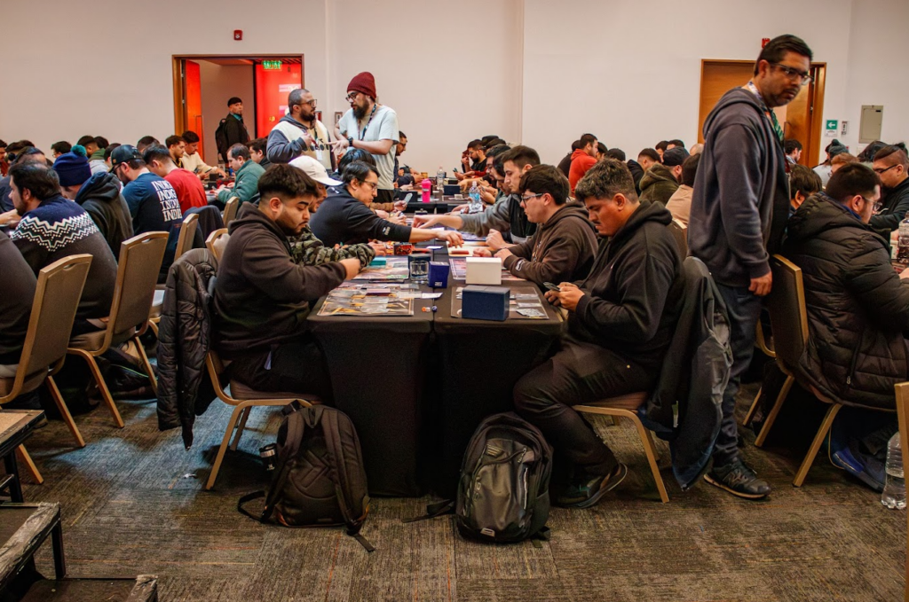
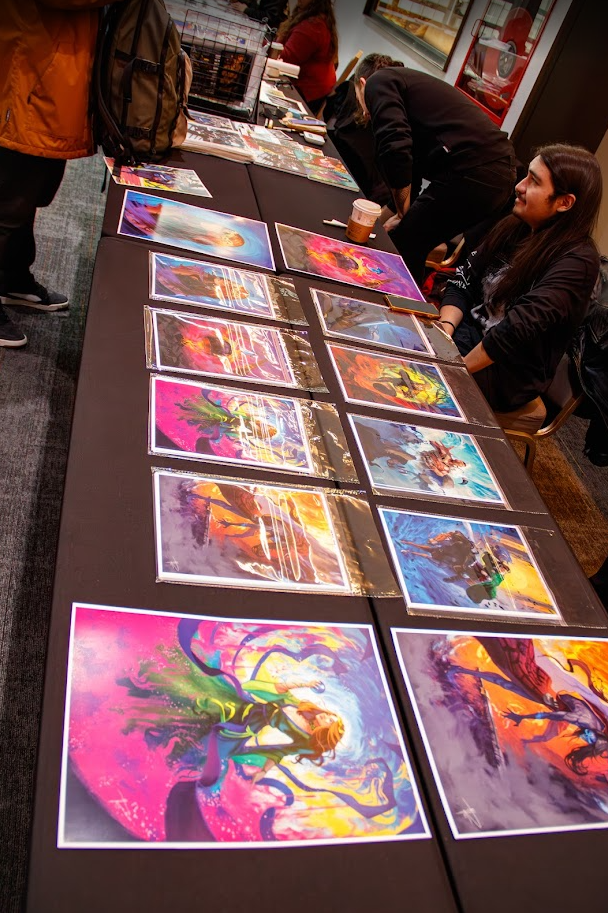
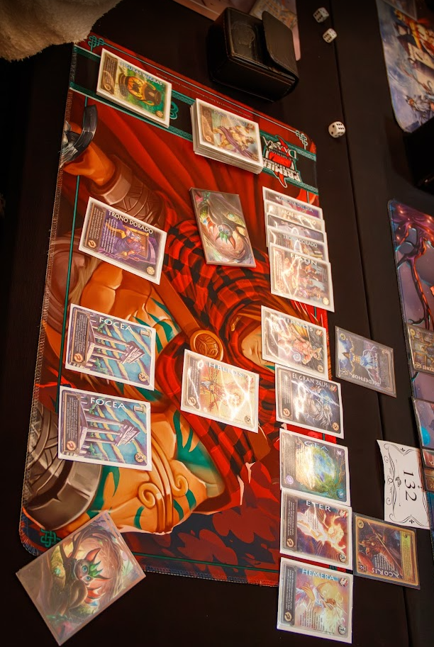
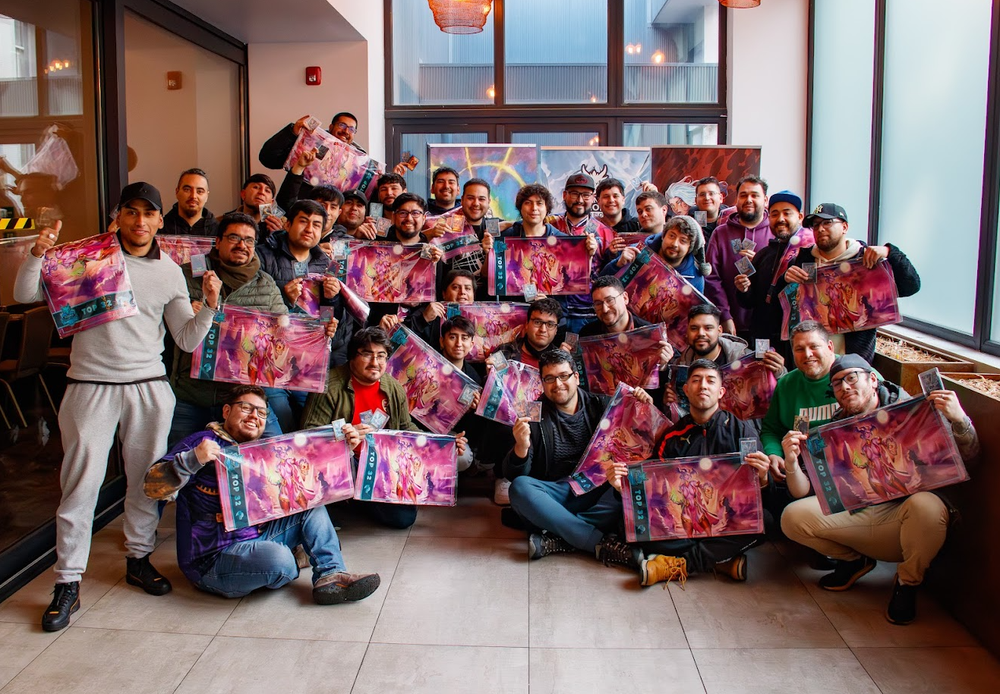
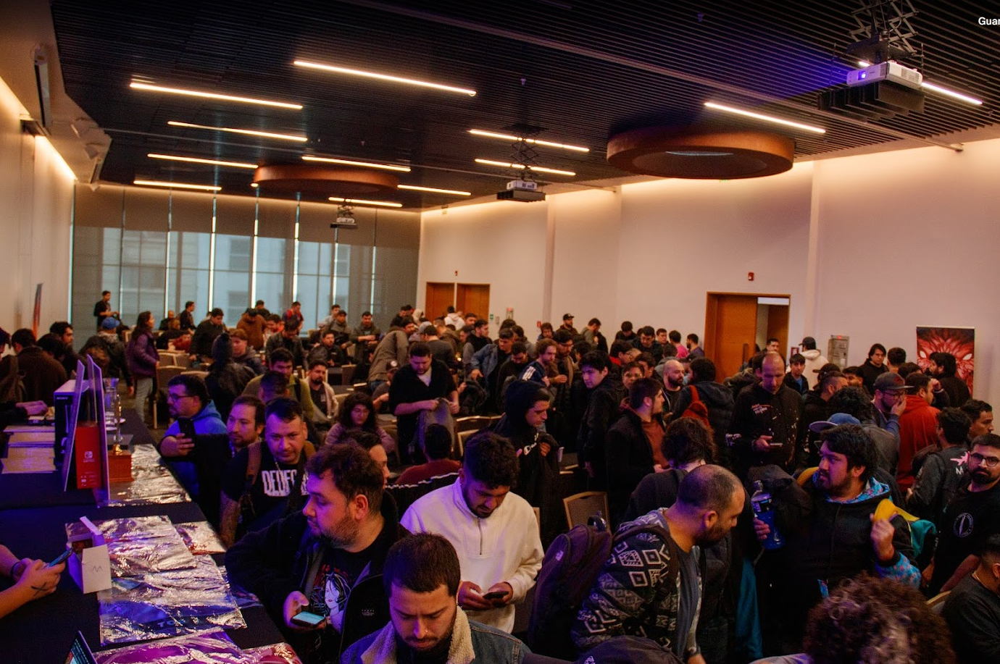

Nacional PB 2024 - Lo más destacado
El Nacional Primer Bloque 2024 reunió a los mejores jugadores de Mitos y Leyendas en un fin de semana lleno de emoción y competencia. Más de 300 participantes se enfrentaron en intensos duelos para coronar al campeón nacional, disfrutando además de actividades paralelas y la presencia de destacados ilustradores.
Fue una experiencia inolvidable que celebró la pasión por el juego y la comunidad que lo rodea.




